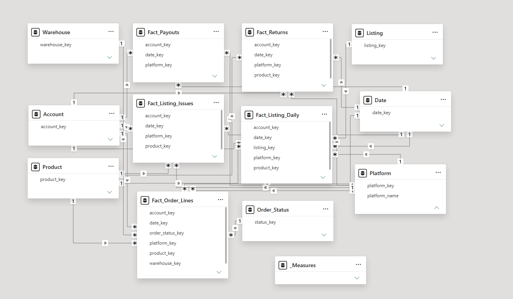
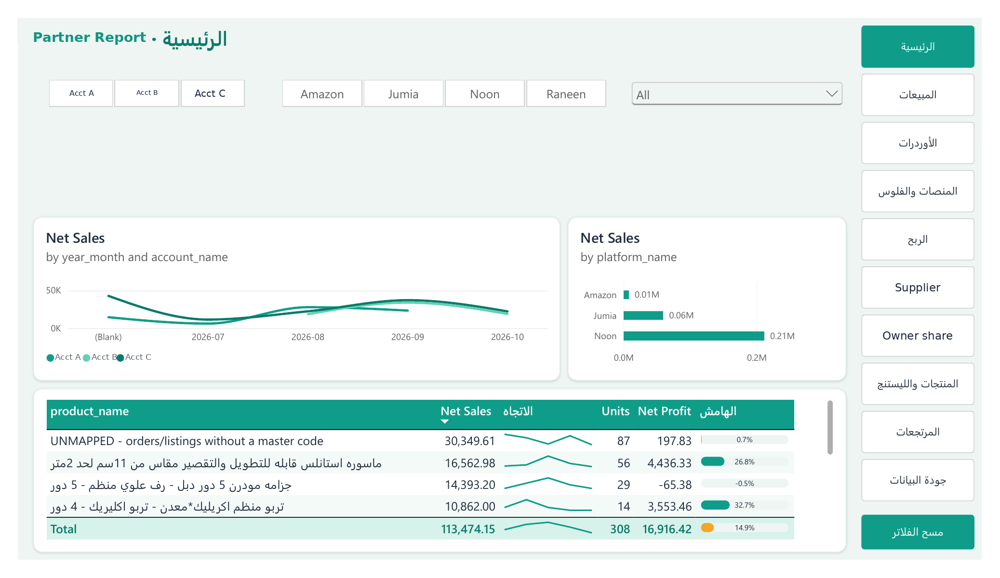
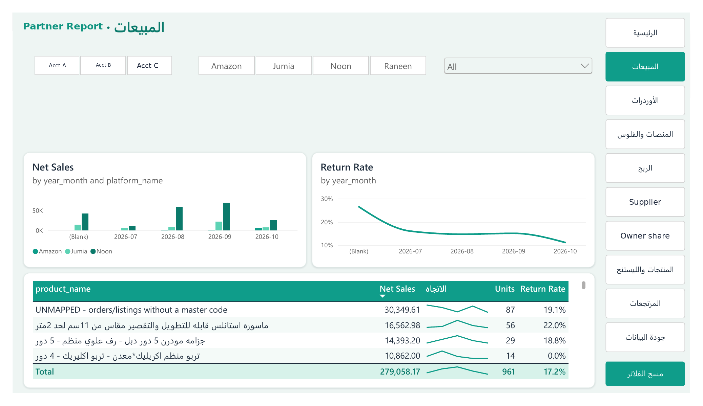
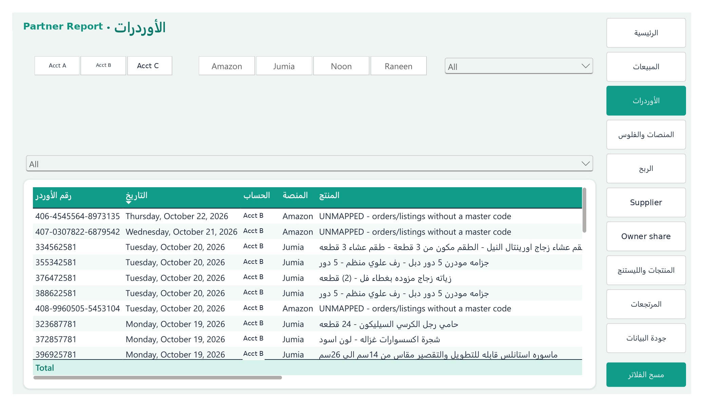
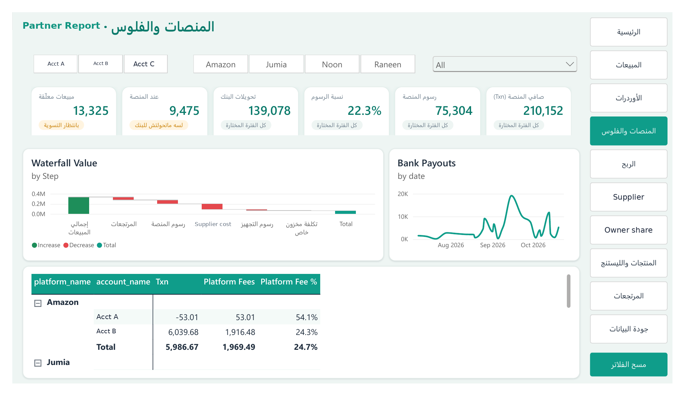
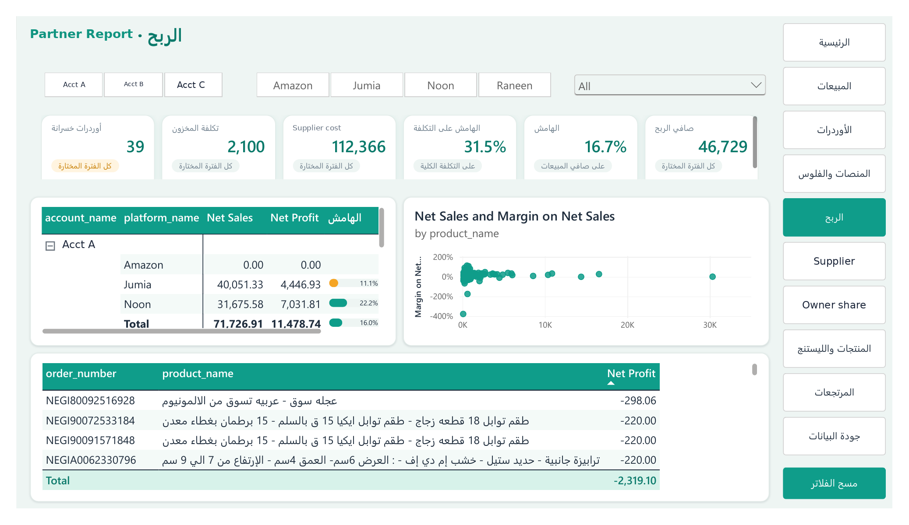
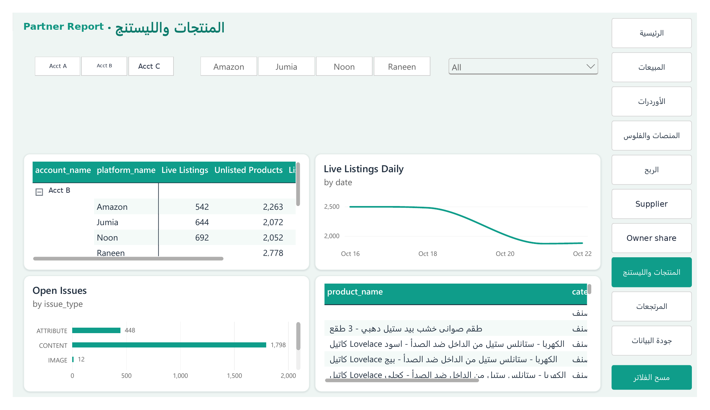
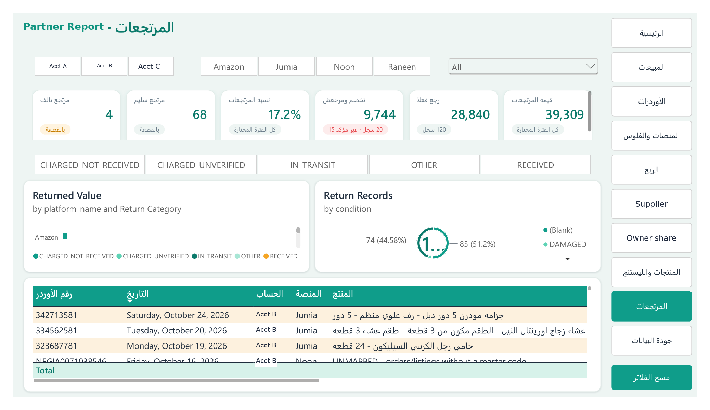
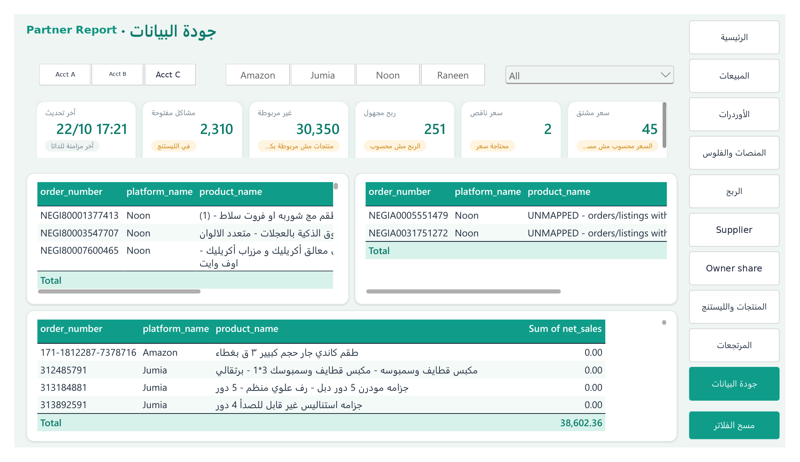

A partner-facing Power BI report on a live e-commerce database
A 13-page Power BI report (8 shown here) that reads the reporting layer of my PostgreSQL warehouse and gives account partners one consistent answer to: what did we sell, what did we keep, what was returned, and what is wrong with the data.
Role: sole designer (questions, metrics, layout, data model). Stack: Power BI, PostgreSQL reporting views, DAX.
Data model
A star schema: shared dimensions (Date, Account, Platform, Product, Warehouse, Order_Status) filter the fact tables (order lines, returns, payouts, daily listings, listing issues). All measures live in one _Measures table. The supplier and owner-share ledger tables are left out of this view.

Selected DAX
The model has 80 measures in 10 display folders (Sales, Platform, Profit, Listings, Returns, Data Quality, Design, Pages). A selection:
Net Sales and return rate
Base measures. Return rate is returns over gross sales, so it is not distorted by the returns already netted out of net sales.
Net Sales = SUM ( Fact_Order_Lines[net_sales] )
Returns = SUM ( Fact_Order_Lines[return_value] )
Gross Sales = [Net Sales] + [Returns]
Return Rate = DIVIDE ( [Returns], [Gross Sales] )Orders excluding pre-shipment cancellations
Follows the business rule that an order cancelled before shipping is not a sale.
Orders =
CALCULATE (
DISTINCTCOUNT ( Fact_Order_Lines[order_number] ),
Order_Status[status_name] <> "CANCELLED_PRE_SHIP"
)Profit, margin and loss-making orders
Net profit is computed once in the warehouse; the model only aggregates it, so every page agrees.
Net Profit = SUM ( Fact_Order_Lines[net_profit] )
Margin on Net Sales = DIVIDE ( [Net Profit], [Net Sales] )
Loss Orders =
CALCULATE (
DISTINCTCOUNT ( Fact_Order_Lines[order_number] ),
Fact_Order_Lines[net_profit] < 0,
Order_Status[status_name] = "DELIVERED_SETTLED"
)Money the platform still owes
Separates settled money from estimates, so pending sales are never mixed with cash already in the bank.
Money Still On Platform =
CALCULATE (
SUM ( Fact_Order_Lines[txn] ),
Fact_Order_Lines[txn_status] <> "ACTUAL"
)Latest live listings (variables, ignoring the date filter)
A snapshot table: the report must show the latest day, whatever month is selected.
Live Listings =
VAR LastDay =
CALCULATE (
MAX ( Fact_Listing_Daily[date_key] ),
REMOVEFILTERS ( Fact_Listing_Daily ),
REMOVEFILTERS ( 'Date' )
)
RETURN
CALCULATE (
DISTINCTCOUNT ( Fact_Listing_Daily[listing_key] ),
Fact_Listing_Daily[state] = "LIVE",
Fact_Listing_Daily[date_key] = LastDay,
REMOVEFILTERS ( 'Date' )
)Month-over-month comparison
Time intelligence behind the up/down badges on the KPI cards.
Net Sales PM =
CALCULATE ( [Net Sales], DATEADD ( 'Date'[date], -1, MONTH ) )
Margin PM =
CALCULATE ( [Margin on Net Sales], DATEADD ( 'Date'[date], -1, MONTH ) )Waterfall from gross sales to profit (disconnected table)
A small disconnected table drives the step order, so one measure feeds the whole waterfall.
Waterfall Value =
SWITCH (
SELECTEDVALUE ( Waterfall_Steps[Step_Order] ),
1, [Gross Sales],
2, -[Returns],
3, -[Platform Fees],
4, -[Supplier Purchase Cost],
5, -[Prep Fees],
6, -[Own Stock Cost],
BLANK ()
)Data bar as an SVG image (conditional colour)
The margin column in the tables is drawn by DAX: red below 0, amber below 15%, green above.
Margin Bar SVG =
VAR _m = [Margin on Net Sales]
VAR _w = MAX ( 0, MIN ( 1, _m ) ) * 116
VAR _col = IF ( _m < 0, "%23E5484D", IF ( _m < 0.15, "%23F5A524", "%230F9D8A" ) )
RETURN
IF ( ISBLANK ( _m ), BLANK (),
"data:image/svg+xml;utf8,<svg xmlns='http://www.w3.org/2000/svg' width='120' height='18'>"
& "<rect x='2' y='3' width='116' height='12' rx='6' fill='%23EEF5F3'/>"
& "<rect x='2' y='3' width='" & FORMAT ( _w, "0" ) & "' height='12' rx='6' fill='" & _col & "'/></svg>" )Report pages







